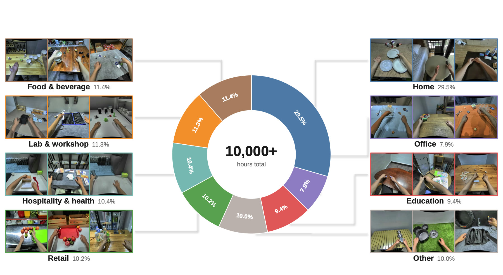
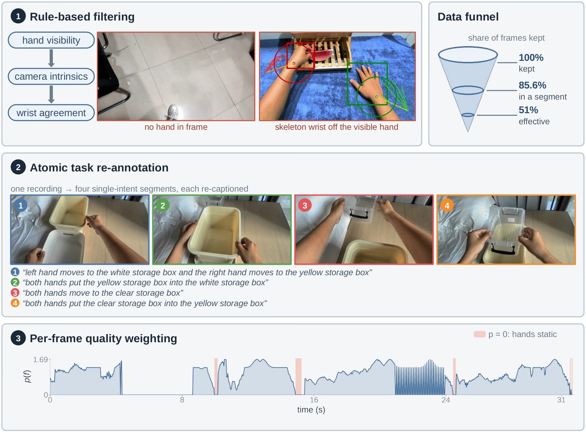
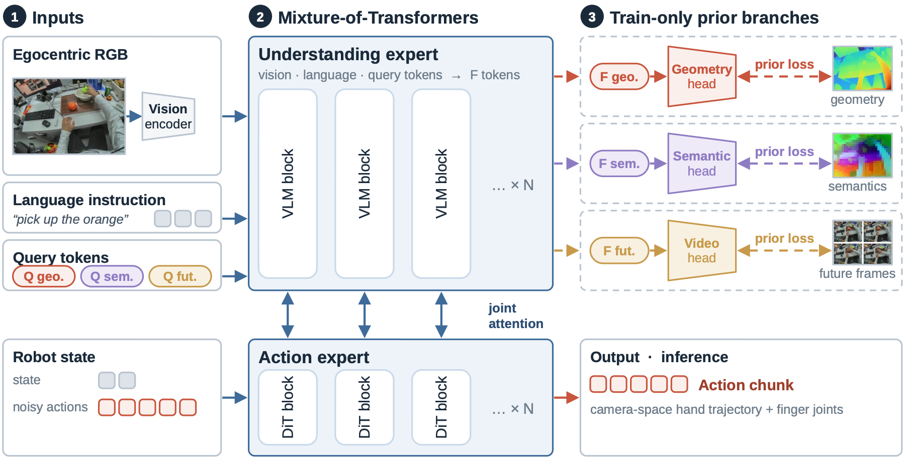
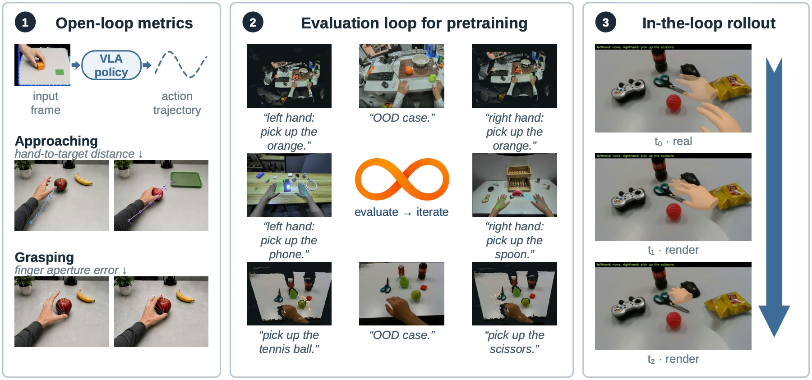
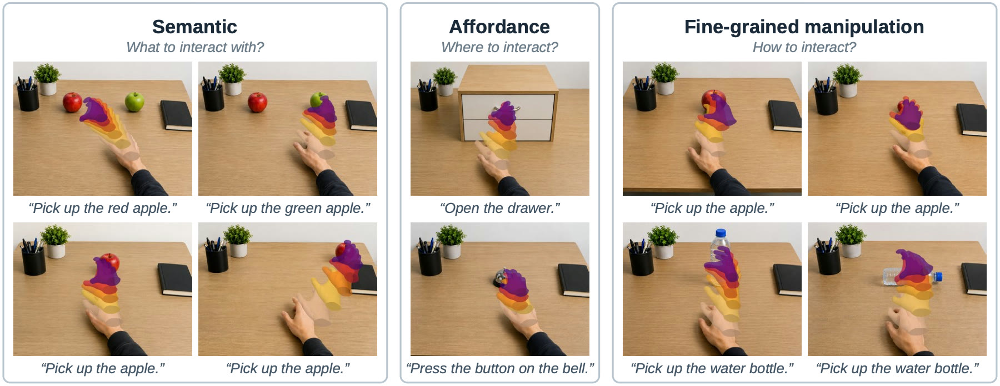
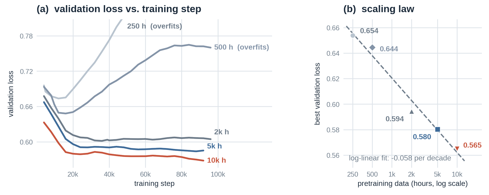
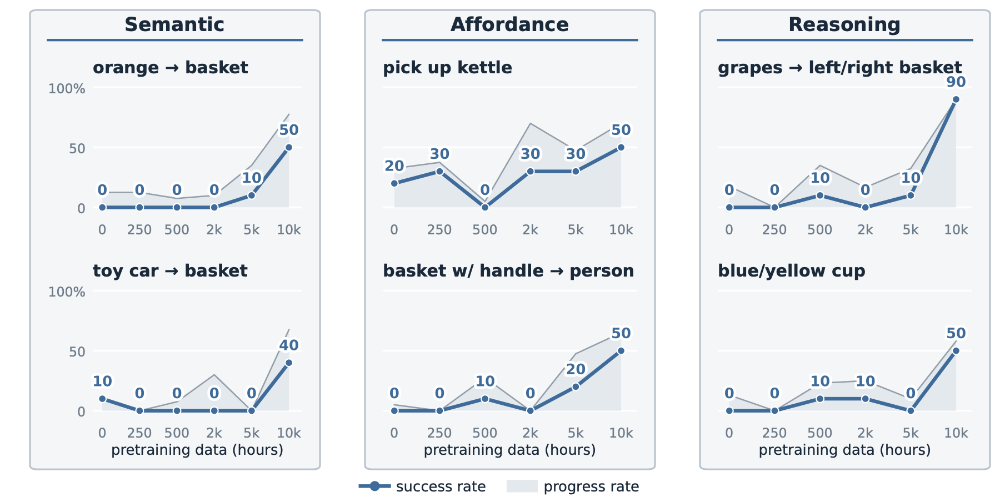

IronMind on IRON-R01
Fully autonomous · all videos play at 1× speed
Turning egocentric human video into robot manipulation knowledge
Egocentric human video is an extraordinarily scalable data source for dexterous manipulation, but two things block it: an embodiment gap — human hands are not robot end-effectors, and cheap recordings carry no torso kinematics for retargeting — and heterogeneous quality, from noisy hand tracking to weakly aligned text.
IronMind bypasses body retargeting by supervising actions directly in camera space, curates 10,000+ hours through filtering, re-annotation and per-frame weighting, and learns with a Mixture-of-Transformers policy coupling vision-language understanding to a flow-matching action expert. Validation loss falls log-linearly with data scale, and the gains carry to out-of-distribution real-robot manipulation.
10,000+ hours, all in one camera frame
Camera space as the action interface
Mapping human motion into a robot torso frame requires assumptions about a body the headset never sees — a rigid, vertical spine — and every assumption becomes label noise. IronMind keeps human trajectories in the native camera frame, transforms robot trajectories into the head camera’s frame by calibration, and aligns the two embodiments by meaning: wrist pose and finger flexion share vector dimensions, so human motion supervises the outputs the robot actually uses.

Curated, not just collected
Raw recordings are full of passive observation, contradictory captions and task labels too coarse to separate sub-actions. Four stages fix that: rule-based filtering drops unrecoverable intrinsics and implausible hand poses; atomic re-annotation cuts recordings into single-intent segments, re-captioned by a VLM, with action losses masked at the boundaries; velocity alignment slows agile human motion toward teleoperation speed; and per-frame quality weighting scores every frame, letting the dataloader sample smooth, intentful motion — 51% effective sample size, no dataset regeneration.

VLA with World Priors
A vision-language understanding expert and a flow-matching action expert, joined by shared attention at selected depths.

Three auxiliary heads — future frames, metric depth, semantic features — hang off a small set of learnable query tokens. Every teacher stays frozen and gradients reach the backbone only through those tokens. After pretraining the heads are deleted: the queries remain, and inference latency is unchanged.
Scoring a policy without deploying on hardware

Open-loop evaluation requires only an image (with estimated depth information) with hands and objects. We run the model on the image for one step, producing one action chunk, and evaluate the quality of that action chunk. For example, if the prompt is to grab an object in the image, then the action chunk should move the hand closer to that object. We calculate the distance between hand and object closed by the action chunk produced by the policy as an evaluation metric. If the hand is close enough to the object, we also calculate a grasping metric, i.e. does the action chunk produce a grasping movement.
Full set of open-loop evaluation metrics are:
dₕ₁₀10th percentile of hand-to-target distance over the chunk, cm — closest approach, stray steps discounted. Lower is better.progressshare of the initial gap closed by the last step. Higher is better.θalignangle between the direction to the target and the wrist’s net displacement. Lower is better.eFAmean absolute finger-aperture error against the demonstration, mm. This measures grasping accuracy. Lower is better.
We carefully construct our open-loop evaluation set to include various OOD scenarios:

Validation loss falls log-linearly, with no saturation at 10,000 hours

The gain is not confined to validation loss. Intermediate budgets are not strictly ordered on every metric, but target approach improves monotonically with data and the largest budget is best in all four columns.
| Budget | dₕ₁₀ (cm) ↓ | Prog. (%) ↑ | θalign (°) ↓ | eFA (mm) ↓ |
|---|---|---|---|---|
| 250 h | 37.8 | 14.7 | 47.8 | 19.97 |
| 500 h | 33.4 | 28.1 | 41.7 | 19.54 |
| 2,000 h | 32.0 | 30.7 | 36.0 | 23.83 |
| 5,000 h | 30.8 | 34.0 | 41.2 | 20.33 |
| 10,000 h | 25.8 | 44.9 | 26.0 | 15.66 |
Chaining three chunks preserves the same ranking.
| Budget | dₕ₁₀ (cm) ↓ | Prog. (%) ↑ | θalign (°) ↓ |
|---|---|---|---|
| 250 h | 32.0 | 21.4 | 46.1 |
| 500 h | 25.6 | 32.2 | 39.5 |
| 2,000 h | 23.0 | 39.0 | 33.9 |
| 5,000 h | 22.7 | 39.1 | 36.3 |
| 10,000 h | 14.6 | 49.3 | 21.6 |
Raters preferred the 10,000-hour checkpoint in 47 of the 70 decided votes.
| Pretraining budget | Votes | Win rate ↑ |
|---|---|---|
| 250 h | 23 | 32.9% |
| 10,000 h | 47 | 67.1% |
What the world-model priors buy
All arms share one pretraining recipe and differ from the three-prior arm by a single key, scored on the same 970-case approaching set.
All three branches together work best, and every single-key variant lands between the first two rows. Dropping one costs 1.5–3.1 cm, depth most of all. Swapping the future targets for current-frame reconstruction gives back nearly the whole gain — the foresight matters more than the distillation — and a horizon of roughly one action chunk beats both a shorter and a longer one. These are a few centimetres apart, so read them as tendencies.
That ranking is open-loop only. On the physical robot it reverses — the arm without world priors is the strongest of all (Table 5).
| Arm | dₕ₁₀ (cm) ↓ | Prog. (%) ↑ | θalign (°) ↓ |
|---|---|---|---|
| no prior | 27.6 | 40.9 | 34.8 |
| three priors | 22.6 | 53.4 | 26.5 |
| without the semantics prior | 24.1 | 50.2 | 29.2 |
| without the depth prior | 25.7 | 46.1 | 31.1 |
| without the dynamics prior | 24.1 | 51.1 | 26.8 |
| targets: current frame | 27.3 | 42.7 | 33.3 |
| horizon 0.2 s | 25.8 | 45.7 | 30.5 |
| horizon 0.8 s | 24.8 | 49.3 | 28.3 |
| dynamics target: 3D motion flow | 25.2 | 47.1 | 28.6 |
On IRON-R01, at 10 Hz, strictly out of distribution
Every real-robot evaluation uses unseen object instances, unseen affordances, or unseen reasoning prompts — ten trials per task, scored for binary success and milestone progress.
Semantic — what to interact with
Unseen categories under heavy clutter: an orange, a toy car, into a basket.
Affordance — where to interact
Grasps dictated by structure: a kettle by the handle, a basket by its handle and handed over.
Reasoning — which one
Prompts resolved before acting: the grapes into the left basket, the blue cup not the yellow.
The rise is strongest in the reasoning and semantic categories; affordance gains less. The scaling runs deliberately leave the world-prior branches off, so that what the curves show is the effect of data scale alone.

Three ablations of IronMind run against public InternVLA-A1.5 weights post-trained on identical data and compute. Camera space without world priors wins on both metrics — though IronMind and the baseline differ in more than initialisation: IronMind shares one action space across pretraining and post-training, the baseline’s is re-initialised, and the corpora differ.
| Initialization | Success ↑ | Progress ↑ |
|---|---|---|
| InternVLA-A1.5 (public weights) | 30.0% | 47.8% |
| IronMind (ours, torso-space) | 26.7% | 46.2% |
| IronMind (ours, camera-space w/ world prior) | 31.7% | 53.3% |
| IronMind (ours, camera-space w/o world prior) | 55.0% | 71.3% |
Two lessons from the ablations
Camera space generalises better
Two IronMind models, one in torso reference space and one in camera space, with data scale aligned at 10,000 hours and the same reference frame used in both pretraining and post-training so the comparison is fair. Camera space wins clearly — to our knowledge the first result showing better generalisation from a camera reference frame in ego-centric pretraining for humanoid manipulation.
World priors may not help on the robot
Dropping world-prior supervision improves real-robot performance, even though the open-loop evaluation shows those same branches clearly helping during pretraining (Table 4). The gap between the two is an open question worth chasing.
Contributors
XPENG Robotics.
We thank members of the XPENG Robotics team — Zike Cheng, Ruixuan Zhao, Mengen Luo, Luoyu Bai, Ying Zhang, Haoyue Liu, Peipeng Chen, Ruyi Li, Yizhe Liu, Yongqi Meng, Yinggan Xu, Xi Chen, Bin Shen, and Yuying Ge — for insightful discussions and deployment support, and Zhenglong Du, Hongmei Gan, and Weiqi Liang for assistance with teleoperation and data collection.
@article{ironmind2026,
title = {IronMind: Scaling Humanoid Dexterous Manipulation via Camera-Space Ego-Centric Pretraining},
author = {Pan, Huimin and Ren, Yufan and Song, Kunpeng and Wang, Siyang and
Zhang, Xiwen and Hu, Xiaoyun and Duan, Zhuoxu and Zheng, Hanrui and
Ni, Jialeng and Zhao, Nathan and Ma, Sibo and Fan, Zhenxuan and
Che, Zhongyang and Bao, Danny and Wei, Jiacheng and Bai, Jerry and
Yue, Xiaoyu and Guo, Xiaoyang and Chen, Chenyi},
journal = {XPENG Technical Report},
year = {2026},
eprint = {2609.39403},
archivePrefix = {arXiv},
doi = {10.48550/arXiv.2609.39403},
url = {https://arxiv.org/abs/2609.39403}
}